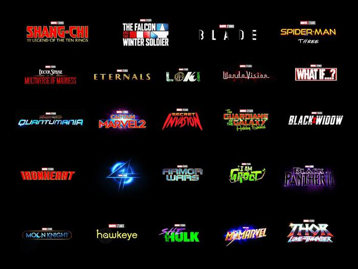
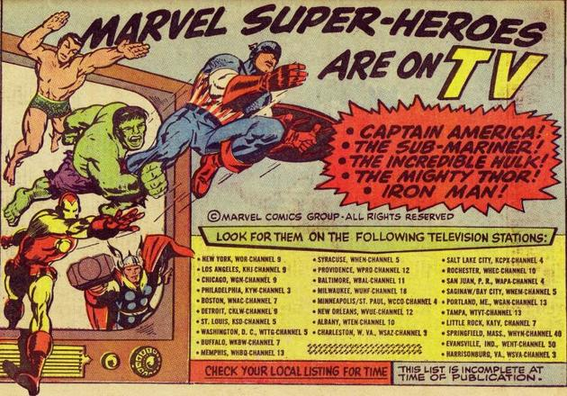
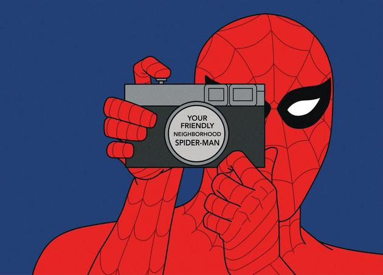
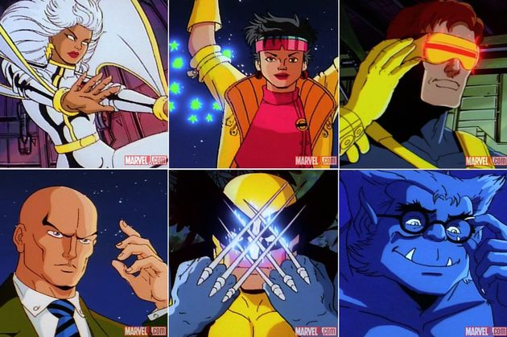
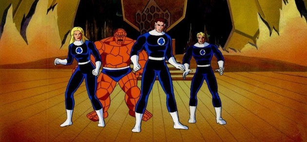
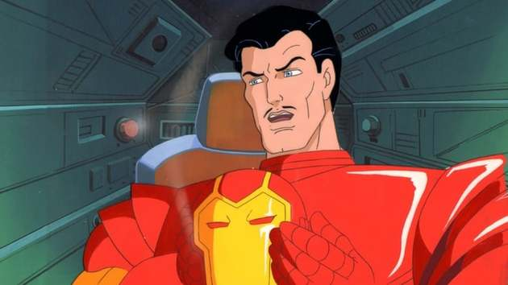

Las series de televisión del Universo cinematográfico de Marvel (UCM) (en inglés, Marvel Cinematic Universe television series) son los programas de televisión de superhéroes estadounidenses basados en personajes que aparecen en publicaciones de Marvel Comics que están inspirados o ambientados en el universo compartido de la franquicia cinematográfica del UCM.
El UCM se expandió por primera vez a la televisión después de la creación de Marvel Television en 2010, el estudio produjo 12 series con ABC Studios y su división de producción ABC Signature Studios desde septiembre de 2013 hasta octubre de 2020. Estas se estrenaron en televisión, streaming y cable, respectivamente, en ABC, Netflix, Hulu y Freeform. La serie principal de ABC se inspiró en las películas y los personajes de las películas, y se denominó la serie «Marvel Heroes». Un grupo conectado de series para Netflix se denominó la serie «Marvel Knights» y se cruzaron entre sí. Se produjeron series centradas en adultos jóvenes para Freeform y Hulu, mientras que esta última también tenía un grupo de series llamado «Adventure into Fear» planificado antes de que Marvel Television cerrara en diciembre de 2019.
MARVEL Proximas series
Marvel Studios, que es el estudio de producción detrás de las películas, comenzó a producir su propias series en 2018 para el servicio de streaming Disney+; la primera de las cuales se estrenó en enero de 2021, y la segunda en marzo. Marvel Studios se encuentra desarrollando doce series y un especial. Todas estas series están basadas en los personajes de apoyo de las películas, tienen presupuestos mucho más grandes que las anteriores series y son interconectadas con las películas, de una manera que la serie de Marvel Television no lo hizo.
Casi desde sus comienzos, han existido series animadas que han adaptado los personajes originales de la editorial a la pequeña pantalla. Aquí te presentamos una exhaustiva guía completa para no perderte en este fascinante y complejo universo.
Marvel Super-Heroes (1966)
Spider-Man (1967-1970)
X-Men (1992-1997)
Fantastic Four (1994-1996)
Iron Man (1994-1996)
